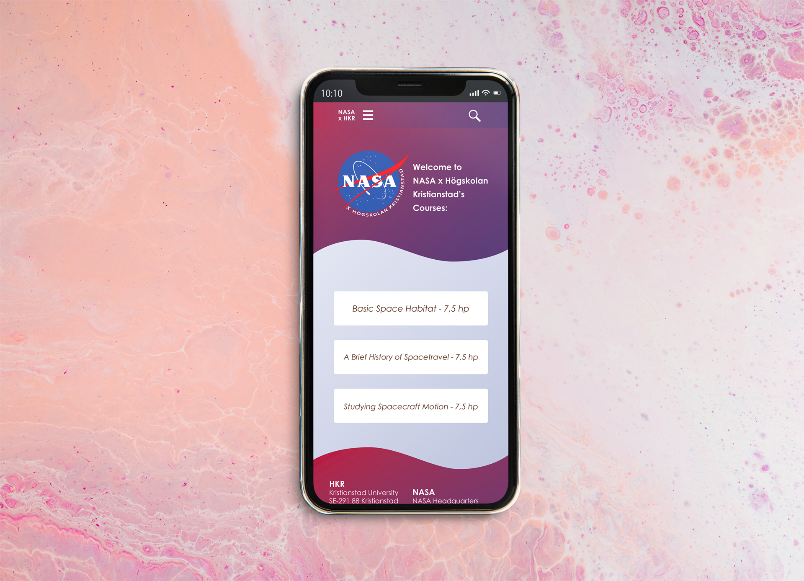

Under en kurs i Grafisk Design för Webben var det ena av delproven att skapa en mobilanpassad design och prototyp för ett påhittat kurssamarbete mellan Högskolan Kristianstad och NASA. Fyra vyer; varav ett anmälningsformulär, en startsida och en introduktion för kursen skapades. Jag ville i min design skapa användarvänligt, så lättförstått och enkelt att läsa, men ändå med ett lekfullt färgschema som representerar innehållet.
